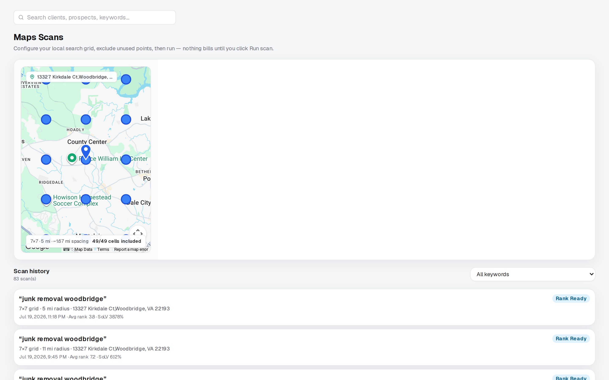
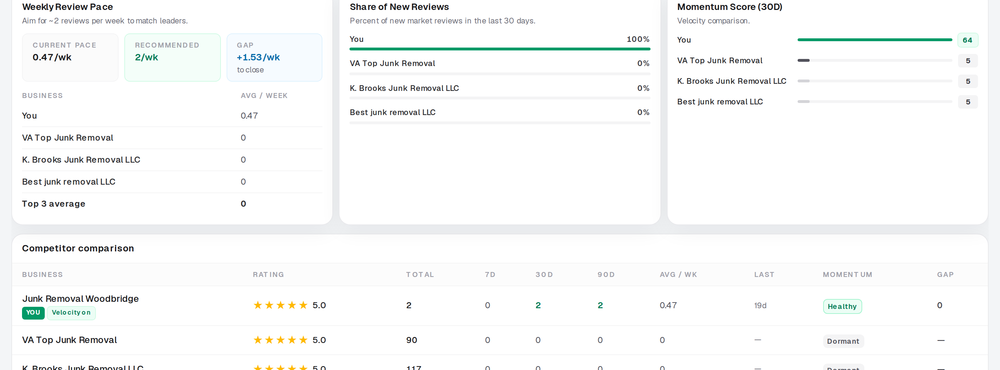
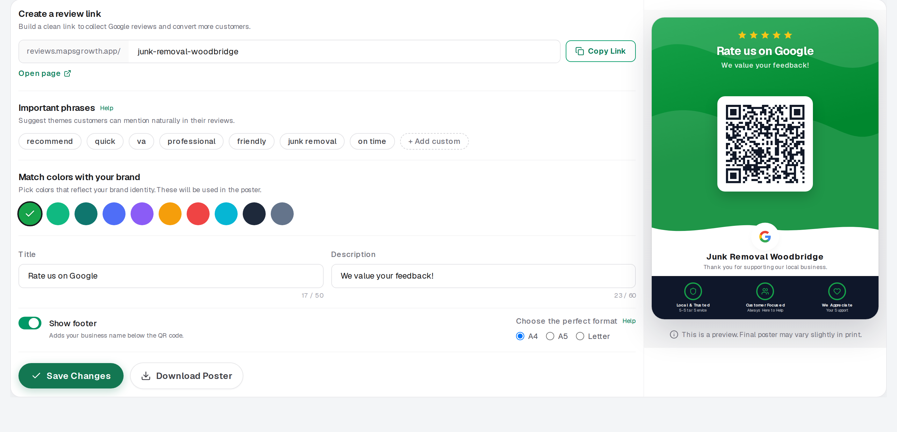
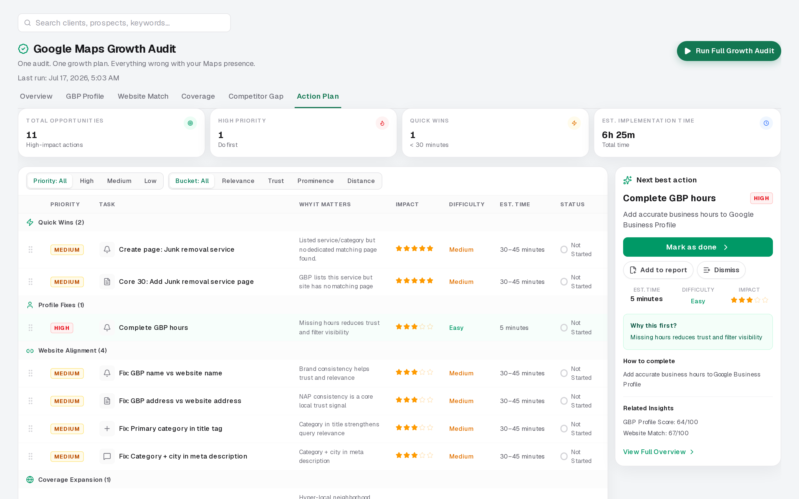

You check less than you should
When every scan costs something, you wait. The map stays stale while the client expects updates.
Google Maps GeoGrid Rank Checker scans show where a client ranks across their whole service area—so you can prove coverage, not guess from one pin drop.
Unlimited map ranking scans. No credits. Check again whenever the work needs proof.

You wait. You skip the re-check after real work. Then the client asks for proof—and you do not have a fresh scan ready.
Credits turn ranking checks into a cost. Freelancers and solo consultants feel that first. The work keeps moving, but the proof does not.
That gap shows up on retainer calls. Clients want to see coverage. You want to show it without burning credits every time.
When every scan costs something, you wait. The map stays stale while the client expects updates.
One pin can look fine. Across town, the client may be gone. You only find out when they complain.
Without before-and-after grids, monthly reviews sound like activity. Clients want outcomes.
Local SEO Express gives you unlimited map ranking scans. No credits. That means you check when the work needs proof—not when a balance allows it.
A full GeoGrid shows where the client wins the map pack and where they fade. You can walk that story in a short call. Clear coverage. Clear gaps. Clear next steps.
That is the outcome retainers need. Clients see the map. You keep the trust.

You are not selling a chart. You are selling confidence. These are the outcomes freelancers and consultants use every month.
Show neighborhoods that already win. Show the spots that need work. One pin drop cannot do that.
Re-scan after categories, reviews, or pages. Put the old grid next to the new one. Progress becomes obvious.
Open a pin. Explain the pack. Pitch the next win. The call ends with action—not another vague update.

Ranking data means more when you see who is ahead. Compare your client against the businesses showing above them on the same grid.
Some competitors win only in one part of town. Others own the whole map. When you can show that difference, you stop guessing where to work.
That helps you pitch the right tasks. Not random SEO. Real coverage gains.
Total review count is not the whole story anymore. Recency matters. A business with fewer reviews can still beat a giant if it keeps getting fresh ones.
Review Momentum compares 7-day, 30-day, and 90-day activity against competitors. You see who is healthy, who is dormant, and where the gap is.
That is a big advantage for consultants. Most tools stop at star totals. Clients understand velocity when you put it next to the competition.

You get a shareable review link and a QR poster you can download. Copy the link. Send it. Print the poster. Put it where customers already are.
That helps review momentum without complicated campaign setup. Clients see a simple path to more recent reviews—the kind Google notices.
Keep the brand colors. Keep the message short. Keep the ask easy.

Most tools stop at the chart. Local SEO Express turns Maps findings into a prioritized action plan clients can understand.
You see quick wins, profile fixes, and website gaps in one place. That makes the next month of work easy to explain—and easier to sell.
The benefit is simple. Less guessing. More approved tasks. Stronger retainers.

The grid proves coverage. These tools help you win the next layer—trust, links, and new clients.
Find chambers, sponsorships, and community mentions. Real local authority helps Maps visibility and makes outreach feel natural.
See who links to competitors but not your client. Chase links that are real and local—not random spam domains.
Run a Maps visibility audit for a prospect. Show the gap. Offer the plan. That is how freelancers win new retainers.
Reports should not need a translator. Show map coverage, competitor movement, and review momentum in plain language.
Use monthly client reports to protect retainers. Use prospect audits to open new conversations. Both start with the same Maps proof—then wrap it in a clean deliverable.
Export PDFs, map images, share links, and CSV when you need them. The benefit is speed. You look prepared without rebuilding slides every month.
Show ranking change, coverage, and what improved since last month. Keep the retainer conversation about results.
Lead with Maps visibility and competitor presence. Make the gap obvious so the next call is about starting work.
Send a link or download a PDF. Clients and prospects can review on their own time without a live screen share.
Built for solo consultants and small freelance agencies. You need clear proof, clean reports, and unlimited scans without credit stress.
Prove coverage with unlimited map scans. Walk clients through a clear map story. Send reports that support the retainer and keep the next month of work approved.
Show progress with simple map grids. Compare competitors and review momentum. Turn rankings into a short action plan your team can deliver.